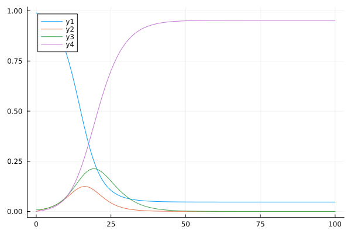

using LabelledArrays, OrdinaryDiffEq, Plots, NamedTupleTools, BenchmarkTools
function seir(du, u, p, t)
N = sum(u)
du.S = - p.β * u.S * u.I / N
du.E = + p.β * u.S * u.I / N - p.ϵ * u.E
du.I = + p.ϵ * u.E - p.γ* u.I
du.R = + p.γ* u.I
endseir (generic function with 1 method)
u0 = @LArray [0.99, 0.0, 0.01, 0.0] (:S, :E, :I, :R);
p_la = @LArray [0.5, 1/2, 1/4] (:β, :ϵ, :γ);
p_la = LVector(p_la, β=0.8, str="string", int=9, la=LVector(a=1,b=2,c=3), tp=(a=1,b=2,c=3));
tspan = (0.0, 100.0);
prob = ODEProblem(seir, u0, tspan, p_la);
sol = solve(prob, Tsit5(), saveat=1);
s = [sol[i].S for i in 1:101];
e = [sol[i].E for i in 1:101];
i = [sol[i].I for i in 1:101];
r = [sol[i].R for i in 1:101];
plot(sol.t, [s e i r])
# NamedTupleTools approach
p_nt = (β=0.5, ϵ=1/2, γ=1/4);
p_nt = merge(p_nt, (β=0.8, str="string", int=9, la=LVector(a=1,b=2,c=3), tp=(a=1,b=2,c=3)));
using BenchmarkTools
time_la = @benchmark solve(ODEProblem(seir, u0, tspan, p_la), Tsit5(), saveat=1);
time_nt = @benchmark solve(ODEProblem(seir, u0, tspan, p_nt), Tsit5(), saveat=1);
time_laBenchmarkTools.Trial: 10000 samples with 1 evaluation.
Range (min … max): 180.800 μs … 345.339 ms ┊ GC (min … max): 0.00% … 99.84%
Time (median): 234.550 μs ┊ GC (median): 0.00%
Time (mean ± σ): 400.856 μs ± 3.459 ms ┊ GC (mean ± σ): 9.26% ± 3.45%
█▅▃▃▂▂▁ ▄▁ ▄▃▁ ▃▂▄▃▃▃▂▂▁▁▁▁▁ ▁
█████████████████████████████████▇▇▇▇▆▆▅▆▅▅▃▅▅▅▅▅▄▅▅▅▄▅▅▅▄▅▅▅ █
181 μs Histogram: log(frequency) by time 1.35 ms <
Memory estimate: 107.62 KiB, allocs estimate: 5775.time_ntBenchmarkTools.Trial: 10000 samples with 1 evaluation.
Range (min … max): 59.800 μs … 273.123 ms ┊ GC (min … max): 0.00% … 99.92%
Time (median): 91.100 μs ┊ GC (median): 0.00%
Time (mean ± σ): 161.812 μs ± 2.731 ms ┊ GC (mean ± σ): 16.86% ± 1.00%
█▇▆▆▆▄▂▁▂▂ ▃▅▆▄▄▂▃▃▃▂▂▃▂▁▁▂▂▂▁▁▁▁▁ ▁▁ ▂
████████████████████████████████████████▇██▇▆▆▇▆▆▆▄▄▅▆▆▆▅▄▃▅▅ █
59.8 μs Histogram: log(frequency) by time 483 μs <
Memory estimate: 29.45 KiB, allocs estimate: 730.